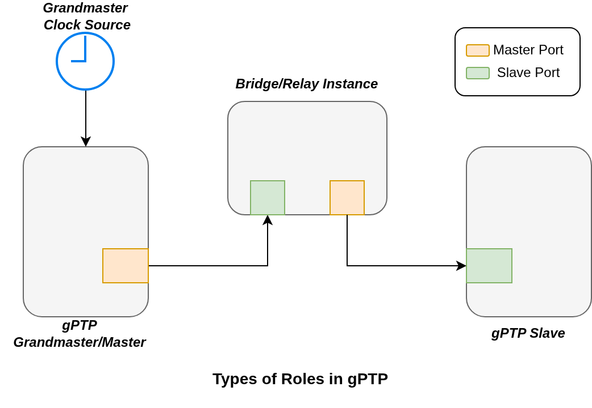
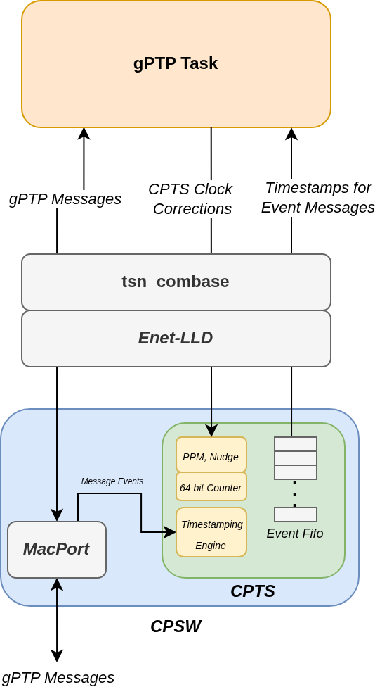
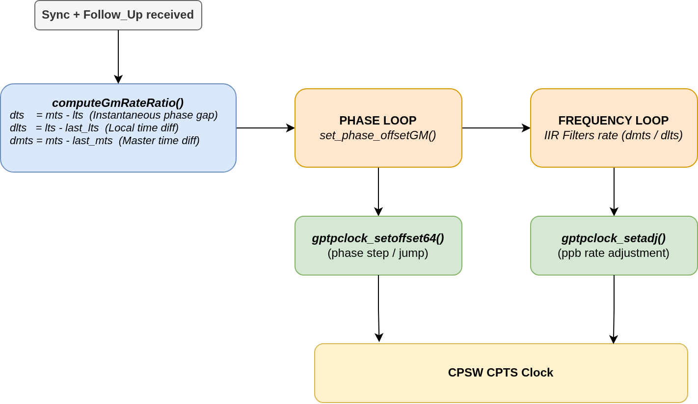
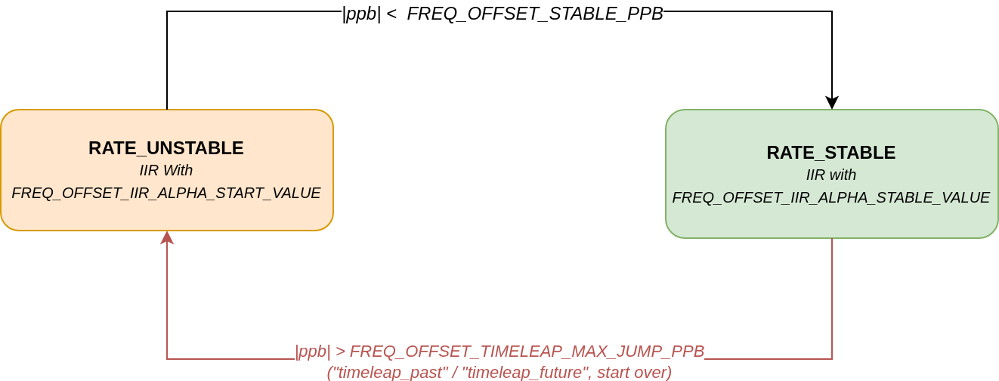
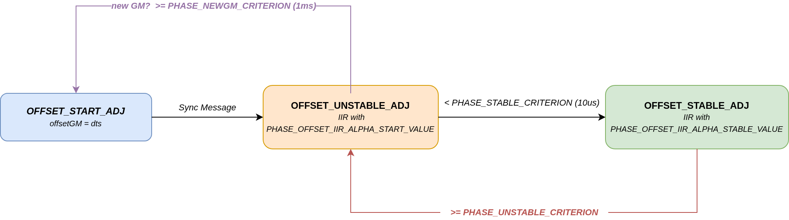
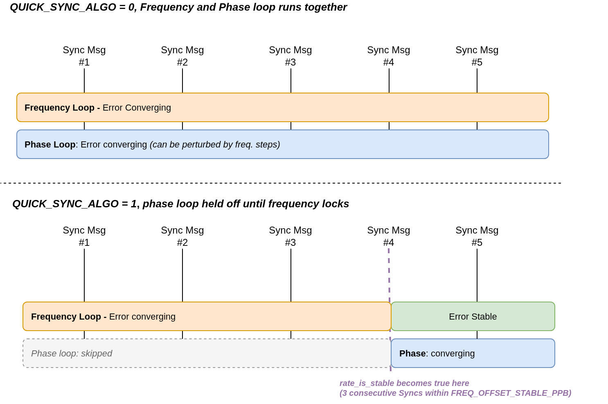
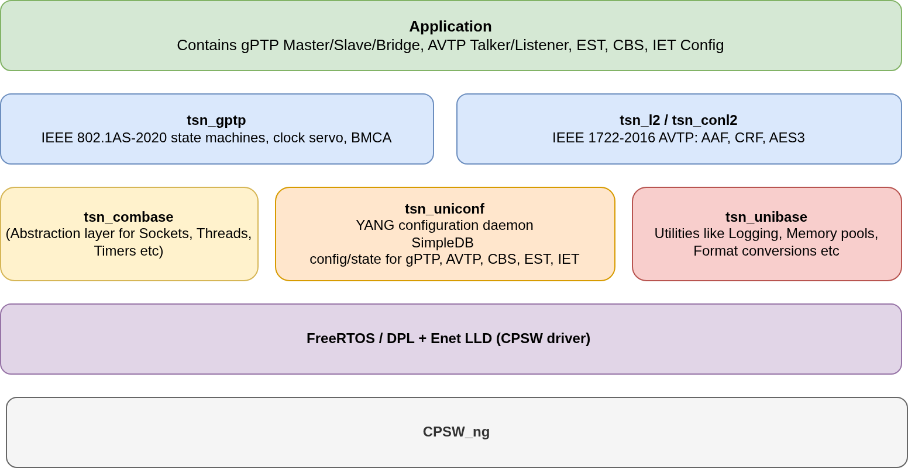
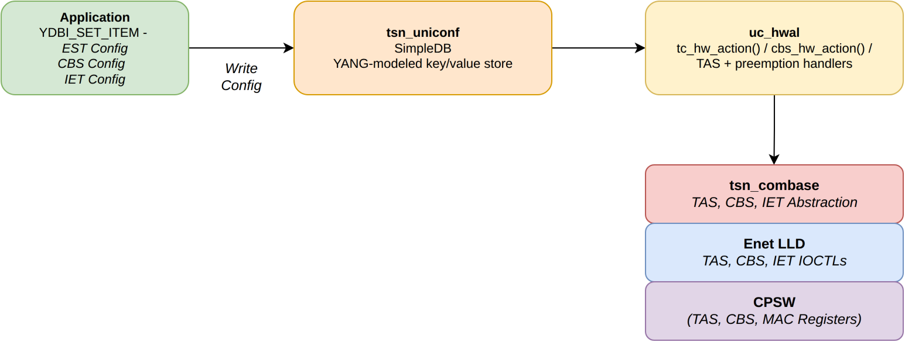

|
AM64x MCU+ SDK
12.01.00
|
|
|
AM64x MCU+ SDK
12.01.00
|
|
This guide explains how the two core protocols of TSN stack — gPTP (IEEE 802.1AS-2020) and AVB (IEEE 1722-2016 AVTP) — are designed and how they drive CPSW hardware. It also introduces the three helper libraries (tsn_unibase, tsn_combase, tsn_uniconf) that every TSN application is built on, and shows how the CPSW hardware-offloaded traffic shaping features — EST, CBS, and IET — are configured through tsn_uniconf.
For feature/device coverage, memory footprint, and interoperability data, see Time-Sensitive Networking (TSN). For step-by-step integration into an application, see Ethernet TSN and gPTP Stack - API and Integration Guide.
gPTP distributes a single, common notion of time across every device on the network so that senders and receivers can act on the same clock. It does this by exchanging four message types — Announce, Sync, Follow_Up, and PDelay — and running a set of standardized state machines on every port. Every device plays one of three roles: Master (Time-Transmitter), Slave (Time-Receiver), or Bridge / Relay Instance .

Timing accuracy comes from hardware feature of the CPSW. It timestamps every PTP event frame in hardware at the exact instant it is transmitted or received, rather than when application code runs.

gptpclock.c) adjusts this counter in two ways: a phase step to correct an instantaneous offset, this happens during initial correction or when grandmaster changes in a network, and a frequency trim to correct for oscillator drift. Whichever adjustment is available in hardware is preferred.A Master port is the source of time for everything downstream of it. It runs two independent send state machines:
A Slave port receives Sync/Follow_Up from its master and continuously re-aligns the local clock to it:
The servo lives in computeGmRateRatio() in tsn_gptp/clock_master_sync_receive_sm.c, and runs once per received Sync/Follow_Up pair. It maintains two independent control loops — one for phase, one for frequency — that both act on the same pair of timestamps: lts (local receipt time) and mts (master's origin time, corrected for path delay and residence time).

Both loops share the same measurement, but they correct different things: the frequency loop tracks how fast the master's oscillator is running relative to the local one (a ratio, corrected continuously in small increments), while the phase loop tracks the absolute gap between the two clocks at this instant (corrected either by a direct step or by temporarily biasing the frequency).
Each Sync interval, the raw rate is computed from the elapsed master/local time deltas and filtered with a single-pole IIR:
alpha itself switches between two configured values depending on a stability state:

While unstable, the filter reacts quickly (default alpha = 1/2) to pull the rate estimate in fast; once three consecutive samples land inside FREQ_OFFSET_STABLE_PPB (default 100 ppb) of each other, the servo switches to the heavily-filtered alpha = 1/10 used for steady-state tracking, which rejects per-packet jitter. If the rate estimate ever jumps by more than FREQ_OFFSET_TIMELEAP_MAX_JUMP_PPB (default 800 ppb) — e.g. a grandmaster change, or the phase loop just stepped the clock — the loop drops back to RATE_UNSTABLE and re-converges from scratch.
The filtered ppb is only pushed to hardware (gptpclock_setadj()) when it differs from the last applied value by more than FREQ_OFFSET_UPDATE_MRATE_PPB (default 10 ppb), and the cumulative adjustment is clamped to MAX_ADJUST_RATE_ON_CLOCK (default 1,000,000 ppb) in either direction.
The phase loop tracks the instantaneous gap dts = mts - lts through its own three-state machine, implemented in set_phase_offsetGM():

Once a new offsetGM is computed, the servo decides how to apply it, not just what value to apply:
PHASE_OFFSET_ADJUST_BY_FREQ (default 100us) and PHASE_ADJUSTMENT_BY_FREQ is enabled (it is, by default), the gap is folded into the frequency loop instead of the hardware clock — the servo briefly biases the rate so the phase error is walked down smoothly, rather than stepped. Gaps smaller than PHASE_OFFSET_ADJUST_TARGET (10ns) are treated as already converged and ignored.gptpclock_setoffset64() performs a direct phase step (jump) on the hardware/software clock. Immediately after a step, the servo skips frequency adjustment for SKIP_FREQADJ_COUNT_MAX (default 2) Sync intervals — a step changes the clock's absolute time, which would otherwise look like a huge, spurious rate change to the frequency loop on the very next sample.All of the thresholds above are configured via the same non-YANG gptpgcfg_set_item() mechanism described in gPTP Yang Config Parameters (defaults from gptp_nonyangconfig.xml):
| Parameter | Default | Meaning |
|---|---|---|
FREQ_OFFSET_IIR_ALPHA_START_VALUE | 2 | Reciprocal alpha while frequency is unstable (fast) |
FREQ_OFFSET_IIR_ALPHA_STABLE_VALUE | 10 | Reciprocal alpha once frequency is stable (slow, jitter-rejecting) |
FREQ_OFFSET_STABLE_PPB | 100 | ppb delta below which 3 consecutive samples mark rate stable |
FREQ_OFFSET_TIMELEAP_MAX_JUMP_PPB | 800 | ppb delta above which a stable rate is declared unstable again |
FREQ_OFFSET_UPDATE_MRATE_PPB | 10 | Minimum ppb change before writing a new rate to hardware |
MAX_ADJUST_RATE_ON_CLOCK | 1,000,000 | Clamp on the cumulative ppb adjustment |
PHASE_OFFSET_IIR_ALPHA_START_VALUE | 2 | Reciprocal alpha while phase is unstable |
PHASE_OFFSET_IIR_ALPHA_STABLE_VALUE | 10 | Reciprocal alpha once phase is stable |
PHASE_OFFSET_ADJUST_BY_FREQ | 100000 (100us) | Above this gap, always step the clock instead of biasing frequency |
SKIP_FREQADJ_COUNT_MAX | 2 | Sync intervals to skip frequency adjustment right after a phase step |
CLOCK_COMPUTE_INTERVAL_MSEC | 1000 | Minimum spacing enforced between servo computations once adjusting |
By default (QUICK_SYNC_ALGO = 0), the phase and frequency loops run simultaneously from the very first Sync — every received Sync/Follow_Up feeds both loops, and both may push corrections to hardware in the same interval. This is standards-compliant and works, but the two loops can fight each other: a frequency correction shifts future timestamps, which the phase loop sees as more offset to correct, which triggers a step, which the frequency loop then misreads as a rate change (this is exactly why SKIP_FREQADJ_COUNT_MAX exists at all).
Setting QUICK_SYNC_ALGO = 1 removes that interaction by strictly sequencing the two loops: frequency first, phase only after frequency is stable.

Because the frequency loop no longer has to fight a moving phase target, and the phase loop no longer starts from a still-drifting rate estimate, both loops individually converge faster — at the cost of the phase gap staying uncorrected for the first handful of Syncs after startup or a grandmaster change. QUICK_SYNC_ALGO defaults to off for backward compatibility; enable it when fast time-to-sync after a grandmaster change matters more than the phase gap during that initial window.
Whichever mode is active, once both loops settle — rate_is_stable == true and the phase state machine reaches OFFSET_STABLE_ADJ — the port's status is promoted from GMSYNC_SYNC to GMSYNC_SYNC_STABLE, which is the state application code should treat as "locked."
A bridge (Relay Instance) has one Slave port receiving time from upstream and one or more Master ports distributing that same time downstream — it does not have its own independent time source. The relay is handled by port_sync_sync_send_sm.c / port_sync_sync_receive_sm.c: the timestamp and rate ratio recovered on the Slave port are forwarded internally and re-transmitted as a new Sync/Follow_Up on every Master port, with each port's own link delay folded into the correction field. From the network's point of view, a chain of bridges behaves as a single distributed clock, with the steps removed count in Announce messages growing by one at each hop so downstream devices can gauge how far they are from the grandmaster.
BMCA (Best Master Clock Algorithm) is what decides which port is Master, Slave, or Passive. port_state_selection_sm.c compares the priority vector carried in every Announce received on every port — grandmaster identity, clock class, clock accuracy, steps removed, and port identity, in that order — and gives the Slave role to whichever port received the numerically best vector. Every other port becomes Master (or Passive, if it hears an equally good vector from a peer bridge). The stack also supports pinning port state statically, bypassing BMCA entirely for topologies that never change.
Path delay is measured independently of port role, on every link, via a three-message peer-to-peer exchange (md_pdelay_req_sm.c / md_pdelay_resp_sm.c):
Both gPTP and AVB are built as clients of three shared, protocol-agnostic libraries. They abstract the underlying hardware and to avoid reimplementation of logging, sockets, or configuration management in gPTP and AVB libraries.

"gptp:55"), memory allocation, timestamp/time-conversion macros, and linked-list/array utilities. Every other TSN library links against it.combase_link, a hardware-agnostic parameter layer (e.g. cbl_cbs_params_t, cbl_tas_sched_params_t) that uniconf's hardware abstraction uses to reach the Enet LLD without knowing about CPSW registers directly.In short: gPTP and AVTP are the protocol logic, uniconf is where their configuration and live state lives; combase is how uniconf (and the protocols) talk to sockets, timers, and hardware; unibase is the common utility floor underneath all of it.
EST, CBS, and IET are all CPSW hardware offloads — the actual gate scheduling, credit shaping, and frame preemption happen in silicon. Uniconf's job is to take a YANG-modeled configuration write from the application and push it down to the right hardware registers through a common pipeline:

Every feature below is a leaf (or sub-tree) of the same ietf-interfaces YANG model, and every write follows the same two-call pattern:
YDBI_SET_ITEM(<accessor>, <ifname>, <key1>, <key2>, ..., YDBI_CONFIG, &value, sizeof(value), YDBI_NO_NOTICE, ...). The <accessor> (e.g. ifknvk0, ifk4vk1) selects how many YANG key levels and array-index parameters the call takes — you don't need to memorize these, just copy the pattern used by the leaf you're setting in the examples below.uc_nc_askaction_push(ucntd, dbald, aps, kvs, kss), where aps[] is the same key path as an array of numeric YANG-node IDs. uc_hwal.c reacts to this call, builds a hardware-agnostic combase_link struct (e.g. cbl_tas_sched_params_t, cbl_preempt_params_t), and the Enet LLD turns that into the actual CPSW IOCTL.All code below is taken from (or, where noted, assembled from confirmed building blocks in) the SDK's own TSN example applications under source/networking/enet/core/examples/tsn/.
EST (Enhancements for Scheduled Traffic) opens and closes each traffic class's gate on a repeating, time-anchored schedule, so time-critical traffic gets a guaranteed transmission window every cycle.
Configuration is a gate control list: a cycle time, a base time (the PTP-domain instant the schedule starts), and an ordered list of (gate-state-mask, duration) entries, where each bit in the mask opens (1) or closes (0) one of the eight traffic classes for that interval. Because admin-base-time is expressed in gPTP time, gPTP must be synchronized before EST is armed — otherwise every device's schedule starts at a different wall-clock instant and the whole point of scheduled traffic is lost.
The gate list itself is built as a plain C struct — no uniconf calls yet, just the schedule you want applied:
Each ENET_TAS_GATE_MASK(tc7..tc0) entry opens traffic class 7 (highest priority — always kept open here) together with exactly one other class for that interval, so tc0 and tc2 alternate getting an exclusive window every 62 µs. admin-base-time should be a few cycles into the future, rounded up to a cycle boundary, which is exactly what EnetEstApp_runSchedule() does using the current gPTP time (gptpmasterclock_getts64()).
Pushing that list to uniconf is a sequence of YDBI_SET_ITEM() writes followed by one trigger:
ifname is the same combase device name used everywhere else in TSN init (e.g. "tilld0"). See the full, working version — including the wait for gPTP sync before arming the schedule — in est_init.c under Examples and Feature Coverage (listed on devices where the EST example is supported).
IET (Interspersing Express Traffic) lets latency-critical "express" frames interrupt a lower-priority "preemptable" frame mid-transmission, then resume the preempted frame afterward — bounding the worst-case latency of express traffic regardless of what else is queued in a lower class.
Configuration is a static, one-time classification of each of the eight traffic classes as express (value 1 — default; never preempted) or preemptable (value 2; may be paused by any express frame) — there is no schedule or timing involved. The SDK's shipped IET example (enet_cpsw_iet/iet_loopback_test.c) applies this classification with a direct Enet LLD call, without going through uniconf:
A uniconf-based path for the same setting also exists in the stack — tsn_uniconf's hardware abstraction (uc_hwal.c, preempt_hw_action()) already reads a per-priority frame-preemption-status-table leaf from the ietf-interfaces YANG model and calls the same combase_link primitive (cbl_preempt_setup(), cbl_preempt_params_t.prioiry_preempt[8], 1 = express / 2 = preemptable) that the IOCTL path above drives directly. No shipped example application exercises this leaf yet, but the write follows the identical pattern used for EST and CBS above:
Preemption only becomes active (preemption-active reads true) once the link partner also negotiates 802.3br support — check that before assuming express traffic is actually being fast-pathed.
CBS smooths a stream's transmissions to a reserved bandwidth using a credit counter: credit accumulates at the configured idle-slope while the queue is empty or waiting, and drains while frames are sent, so a stream can never burst far above its reservation even if the application bursts data into the queue.
Configuration is one admin-idleslope value (bits/sec) per traffic class. Order matters: idle-slope must be written starting from the highest-priority traffic class downward, since CPSW's shaper hardware computes each lower class's available bandwidth relative to what's already reserved above it — the AAF PCM Ethernet-ring demo's own comment says this explicitly:
Enabling CBS and writing each class's idle-slope both go through the same YDBI write + trigger pattern as EST:
If the application needs to know when the hardware update has actually landed before moving to the next (lower-priority) class, register a notice semaphore on the same key path before writing and wait on it (uc_nc_notice_register() / uc_notice_sig_check()) — cbs_config.c does this at startup so the highest-priority class is guaranteed configured in hardware before the next one is written. See cbs_config.c (used by the AAF PCM Ethernet-ring demo, aafpcm_audio_etherring_demo) for the complete, working multi-class sequence.
 1.8.20
1.8.20